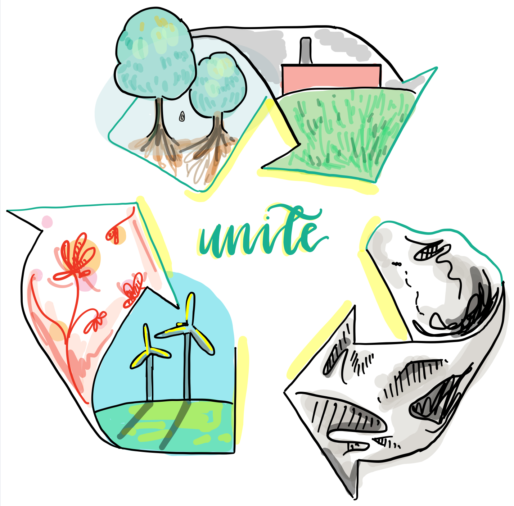

Recycling Guidelines
If the earth can change, why can't we?
Why Do We Need to Recycle?
As entire islands are being covered with waste and landfills rise higher and higher, recycling has become more important than ever before. Not only does it reduce waste, but it also conserves valuable natural resources and raw materials. This is crucial, as it decreases pollution and saves energy by reducing the need to collect such materials or make them from scratch. Additionally, recycling makes more room for green industries, which generally offer much more positions than incinerators or landfills do.
However, here in South Florida, many people fail to recycle properly, and this has led to dire consequences.
In fact, the nationwide recycling company and primary trash/recycling pickup service in Florida, Waste Management, temporarily ended “mixed-paper” recycling completely in Broward County in February of 2020. That meant that newspapers, mail, magazines, glossy inserts, pamphlets, catalogs, print and office paper and school paper could no longer be recycled.
The reason for this? People have been tossing garbage into their recycling bins, causing contamination rates of up to 30 percent. Therefore, the paper, which could have been recycled if it was clean, must be sent to the landfill or burned to turn into electricity, since it is impossible to clean it enough to repurpose it after it has been contaminated.
Fortunately, Waste Management repealed this notice, but the situation is a wake-up call for change.
Not only has our state failed in recycling technique, we have also failed to recycle in general. According to the Florida Department of Environmental Protection, Florida’s recycling rate has been declining since 2016. Our 2018 recycling rate was only 49%, falling very much short of the 2018 interim recycling goal of 70%.

How Do We Know What to Recycle?
Although it may sound simple, recycling must be done in a certain way to maximize its benefit for the environment.
There are a few common mistakes in recycling: First, throwing trash in a recycling bin. Recycled materials are not usually sorted, so non-recyclable items tend to contaminate recyclables and cause them to be thrown away, reversing progress. Second, throwing away unclean materials. Try to clean off materials being recycled––empty water bottles, scrape food off paper plates, and only recycle clean, non-oily paper. Third, do not recycle items inside of plastic grocery bags, since these loose plastics cannot be recycled.
Here is a guide to what can and can not be recycled:
Items that can be recycled include:
- Plastic bottles and containers
- Cans (tin, aluminum, steel)
- Paper
- Flattened cardboard and paperboard
- Glass bottles and containers
- CDs or DVDs
- Ink cartridges
- Rigid plastic products
Items that cannot be recycled include:
- Greasy paper
- Used paper towels/tissues
- Broken ceramics, light bulbs, and mirrors
- Film plastics (plastic bags, shrink wrap, bubble wrap)
- Reuse plastic bags in your home!
- Styrofoam/expanded polystyrene (EPS)
- Electronics
- Paper packaging around packs of drink cans
- PLA plastic (although it is called compostable, it will not biodegrade in the environment and needs composting facilities not available in Florida; it will cause problems if added to the recycling stream)
- Cups with wax/plastic coatings
- Items that can tangle
Items that can be recycled in specific places include:
- Clothing, shoes, and other cloth/textile items can be donated or resold
- Compact fluorescent lamps and fluorescent tubes should be recycled at a Household Hazardous Waste collection
- Rechargeable or single-use batteries
- Under Florida law, it is illegal to discard nickel-cadmium or small sealed lead acid rechargeable batteries or products containing such rechargeable batteries in the trash.
- The batteries must be recycled or sent to a facility permitted to dispose of those batteries.
- Call call2recycle.org to find a retailer near you that accepts batteries, or go to your county Household Hazardous Waste (HHW) facility.
Labels on Recyclables:
All plastic products have a resin identification code (RIC), which tells you whether you can recycle it. Plastics labeled 1 and 2 can be recycled at almost every recycling center, but numbers 3, 6 and 7 usually cannot be recycled and can go directly in the trash. Some recycling centers can process plastics labeled 4 and 5, but you need to check with your specific center.
Closing the Loop:
In addition to recycling, try to buy items that are either repurposed or made from recycled content! This will increase the demand for recycled goods, improving business for recycling centers and moving towards a more sustainable community overall.
Please, encourage your friends and family to recycle and remember that each repurposed shirt, each recycled cup, and each piece of trash have boundless effects on the world around you. Together, let’s make those effects positive.
- Planet Programers